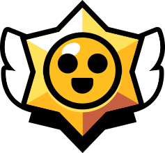

🔴🔵 Configurar Partida Ao Vivo
Time Azul

VS
Time Vermelho
Você escolhe como a janela de transmissão vai se parecer. Em qualquer um dos dois, há um botão
Abrir Transmissão que cria uma aba separada sincronizada,
pronta para capturar no OBS.
A key fica salva apenas no seu navegador e é enviada ao proxy do servidor para consultar os 3 IDs.
Em site 100% estático (GitHub Pages) sem backend, a leitura automática não funciona — veja a explicação
junto dos arquivos. O botão testa a conexão quando o backend estiver no ar.
Azul
0
Partida 1
MD3
1º a 2 vitórias
Vermelho
0
📁 Histórico de Partidas
Nenhuma partida registrada ainda.